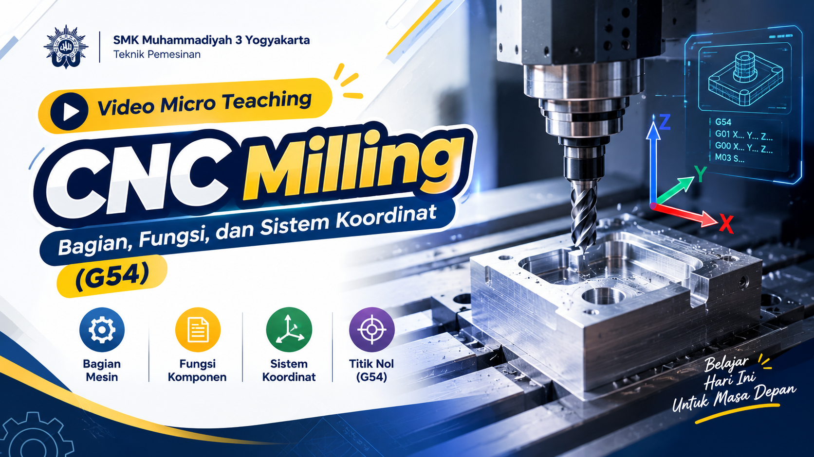

Seorang pendidik yang berkomitmen menanamkan semangat bahwa kesuksesan dapat diraih melalui tekad
kuat dan pantang menyerah. Memiliki minat pada desain, manufaktur, dan energi terbarukan.
E - Portofolio Peserta PPG Calon Guru 2026 Gel - 1
Ruang Karya & Inovasi PPL II
ARTEFAK PEMBELAJARAN
Modul Ajar
Modul Pembelajaran CNC Milling
Modul ajar komprehensif teknik pemesinan CNC Milling mencakup capaian pembelajaran, alur tujuan instruksional, serta keselamatan kerja bengkel.
Refleksi Kritis Video Pelaksanaan Praktik Mengajar Mandiri
Analisis mendalam berbasis rekaman video pembelajaran mandiri pada kompetensi keahlian Teknik Pemesinan di SMK Muhammadiyah 3 Yogyakarta. Fokus observasi mencakup ketepatan sintaks pedagogik, integrasi budaya K3 industri, diferensiasi bimbingan simulator, interaksi dialogis, serta penguatan asesmen formatif.

Klik untuk Memutar Rekaman
SMK Muhammadiyah 3 Yogyakarta
20:37 Full HD 1080p
ASPEK 1 • PSIKOPEDAGOGIK
Apersepsi Kontekstual & Motivasi Belajar
"Mengerjakan CNC itu wajar, saya dulu juga takut... yang penting kita pahami prosedurnya dan tidak perlu khawatir."
Observasi Rekaman:
Membuka pembelajaran dengan presensi personal yang humanis dan mengecek kesiapan fisik siswa yang sedang kurang sehat. Guru mengaitkan keterampilan prasyarat mesin bubut/frais manual menuju sistem otomatis CNC Milling, serta secara terbuka memvalidasi rasa cemas siswa di awal.
Analisis & Dampak:
Pendekatan empatik ini berhasil menciptakan iklim kelas yang aman secara psikologis (psychologically safe environment), mereduksi kecemasan teknis siswa terhadap mesin canggih, dan menumbuhkan rasa percaya diri untuk mencoba.
ASPEK 2 • BUDAYA INDUSTRI
Anatomi Mesin, SOP K3 & Tombol Emergency
"K3-nya adalah APD kacamata pelindung chip gram panas, kurungan penutup mesin, dan tombol Emergency Stop bila putaran abnormal."
Observasi Rekaman:
Menjelaskan secara terperinci anatomi CNC Milling: fungsi spindle, ragum (vise), tool holder, dan pendingin (*coolant automatic*). Menegaskan SOP K3 industri: kewajiban kacamata kerja pelindung chip tajam, kurungan pintu mesin, serta prosedur tombol *Emergency Stop* bila terjadi kesalahan *feed rate*.
Analisis & Dampak:
Integrasi budaya K3 (5S/Zero Accident) tidak hanya menjadi formalitas, tetapi ditanamkan sebagai kesadaran preventif mutlak bagi calon teknisi presisi sebelum mesin beroperasi.
ASPEK 3 • METODOLOGI & SIMULASI
Sistem Koordinat 3 Sumbu & Scaffolding 1-on-1
"CNC itu unik ada 3 sumbu: kanan-kiri X, maju-mundur Y, naik-turun Z... koordinatnya coba dicek lagi, simpen sini jalan nggak."
Observasi Rekaman:
Materi koordinat Kartesius dan titik nol benda kerja (G54) dipelajari melalui jobsheet digital dan simulasi komputer. Guru tanggap memfasilitasi sarana (*"kalau di laptop tidak kuat, pakai PC komputer lab"*), lalu aktif bergerak (*mobile teaching*) mendampingi siswa, memeriksa baris program G-code, dan memvalidasi gambar simulasi.
Analisis & Dampak:
Diferensiasi proses dan *scaffolding* adaptif menjamin setiap kelompok siswa mendapatkan bimbingan bertahap sesuai kecepatannya, memvalidasi lintasan pahat sebelum eksekusi ke mesin riil.
ASPEK 4 • ASESMEN & REFLEKSI
Evaluasi Formatif, Review & Kesiapan Praktik
"Sumbu koordinat ada berapa? 3 ya. Sudah mulai agak berani belum untuk mengerjakan di mesin riil?"
Observasi Rekaman:
Melakukan *cross-check* hasil simulasi siswa langsung di layar monitor, mengapresiasi keberhasilan visualisasi (*"sip, gambarnya sudah bagus"*), mengajukan tanya-jawab konsep sumbu dan titik nol G54, serta merefleksikan keberanian afektif siswa sebelum penugasan upload LKPD.
Analisis & Dampak:
Asesmen formatif memberikan umpan balik langsung (immediate feedback), sekaligus menjadi indikator kesiapan psikomotorik siswa untuk melangkah ke siklus pembubutan/pemfraisan fisik di bengkel.
Kronologi Sintaks Pembelajaran pada Rekaman (Durasi 20:37)
Tahapan pelaksanaan praktik mengajar mandiri terekam terstruktur sesuai alur modul ajar teknik pemesinan:
00:00 – 04:15
Tahap Pendahuluan
Salam, doa bersama, presensi humanis mengecek kondisi siswa, apersepsi mesin konvensional ke CNC, dan menumbuhkan rasa percaya diri belajar.
04:16 – 10:30
Tahap Inti: Teori & K3
Penjelasan bagian-bagian CNC Milling, sistem pendingin coolant otomatis, kewajiban APD kacamata kerja, kurungan mesin, dan SOP Emergency Stop.
10:31 – 17:15
Tahap Inti: Simulasi & Jobsheet
Pemberian materi sumbu koordinat (X, Y, Z), penetapan titik nol benda kerja (G54), pembagian jobsheet digital, dan pendampingan 1-on-1 di lab komputer.
17:16 – 20:37
Tahap Penutup & Refleksi
Cross-check hasil simulasi G-code, tanya-jawab penguatan konsep koordinat, refleksi kesiapan afektif siswa, pengumpulan tugas LKPD, dan doa penutup.
POIN 2 • KONTRIBUSI SEKOLAH & VOKASI
Analisis & Refleksi Pelaksanaan Kegiatan Non-Mengajar
Sebagai calon pendidik kejuruan profesional, pengabdian di SMK Muhammadiyah 3 Yogyakarta tidak terbatas pada interaksi tatap muka di dalam kelas, melainkan mencakup partisipasi aktif dalam manajemen logistik bengkel, kemitraan strategis dengan industri internasional, persiapan uji sertifikasi profesi, penegakan integritas asesmen, serta pemeliharaan sarana prasarana permesinan.
Tata Kelola • 5S Bengkel
Inventarisasi Perkakas Bengkel (Toolman Support)
Berkolaborasi intensif bersama teknisi bengkel (toolman) dalam mendata, mengklasifikasikan, dan menata seluruh perlengkapan perkakas permesinan (pahat bubut, cutter milling, alat pencekam, dan alat ukur presisi). Menerapkan budaya kerja 5S (Seiri, Seiton, Seiso, Seiketsu, Shitsuke) pada rak alat dan shadow board guna mempermudah akses serta mencegah kehilangan alat saat pembelajaran praktik.
Refleksi & Dampak Kompetensi:Memperkuat pemahaman manajerial tata kelola logistik bengkel vokasi serta menanamkan etos ketelitian dan kedisiplinan kerja industri bagi peserta didik.
Kemitraan DUDI Global
Fasilitasi Kunjungan Industri Hino Motors Jepang
Terlibat aktif dalam tim kepanitiaan persiapan kunjungan delegasi industri internasional dari Hino Motors (perwakilan Jepang) ke SMK Muhammadiyah 3 Yogyakarta. Menyiapkan alur seremonial, tata ruang workshop penyambutan, serta kesiapan area unjuk kerja penerimaan hibah unit truk sebagai sarana penguatan pembelajaran teknologi kejuruan terkini.
Refleksi & Dampak Kompetensi:Memperluas wawasan mengenai dinamika kemitraan strategis Link and Match SMK dengan industri global, serta mengasah keterampilan komunikasi organisasional sekolah kejuruan.
Asesmen Kejuruan • UKK
Persiapan Teknis Uji Kompetensi Keahlian (UKK) Kelas XII
Mendukung persiapan teknis komprehensif jelang Uji Kompetensi Keahlian (UKK) bagi siswa Kelas XII. Bertanggung jawab memverifikasi kesiapan presisi mesin bubut dan frais, penyiapan bahan baku (raw material) sesuai jobsheet standar industri, serta penataan alur rotasi peserta uji agar asesmen unjuk kerja berjalan tertib dan terstandar.
Refleksi & Dampak Kompetensi:Memahami standar sertifikasi profesi kejuruan dan tata kelola ujian kompetensi nasional, serta melatih kemampuan antisipatif dalam menjamin kelancaran asesmen unjuk kerja.
Asesmen Akademik • Evaluasi
Pengawasan Ujian Penilaian Tengah Semester (PTS)
Melaksanakan tugas pengawasan ruang pada rangkaian evaluasi Penilaian Tengah Semester (PTS). Bertanggung jawab mengelola tata tertib ruang ujian, memverifikasi presensi kehadiran peserta didik, memandu pembagian instrumen soal/sistem ujian komputer, serta memastikan iklim asesmen berlangsung jujur, tertib, dan kondusif.
Refleksi & Dampak Kompetensi:Menguatkan kompetensi sosial dan kepribadian pendidik dalam menegakkan etika integritas akademik dan membangun ketertiban formal di lingkungan sekolah.
Teknis • Maintenance & Repair
Pemeliharaan & Perbaikan Peralatan Bengkel (M&R)
Terlibat langsung dalam agenda perawatan rutin (preventive maintenance) dan penanganan perbaikan ringan (corrective repair) pada mesin perkakas bengkel yang mengalami kendala teknis (seperti kelonggaran eretan, pelumasan bantalan bearing, pembersihan bak cairan pendingin, serta pengetesan sistem kelistrikan mesin).
Refleksi & Dampak Kompetensi:Meningkatkan keterampilan teknis (hard skills) diagnosis mesin serta menumbuhkan tanggung jawab preventif guna memastikan kelayakan fasilitas dan keselamatan kerja siswa.
PENILAIAN PPL MANDIRI
UJIAN TENGAH SEMESTER (UTS) • SIKLUS 1
Berkas Lengkap Terverifikasi
Asesmen Kinerja Pembelajaran Mandiri Siklus 1
Berdasarkan instrumen resmi evaluasi PPG PPL II, komponen UTS memuat: 1) Produk rancangan/perencanaan pembelajaran lengkap yang terbaik dari praktik mengajar mandiri siklus 1, dan 2) Produk video pelaksanaan praktik mengajar mandiri dari rancangan atau perencanaan pembelajaran yang dipilih.
Rancangan pembelajaran komprehensif Siklus 1 yang memadukan capaian pembelajaran Fase F, diferensiasi proses, simulasi digital, dan pembiasaan budaya keselamatan kerja (Zero Accident) industri di bengkel vokasi SMK Muhammadiyah 3 Yogyakarta.
Alur Apersepsi Humanis SOP Emergency Stop Modul Ajar Terpadu
Instrumen evaluasi otentik berformat resmi PPG UST 2026 untuk pembuktian capaian nilai rancangan pembelajaran dan unjuk kerja praktik mengajar mandiri Siklus 1.
Terverifikasi GP & DPL
Lampiran 7 (LK 7) Space File Nilai
LK 7: Penilaian Penyusunan Perangkat Pembelajaran (Siklus 1)
Instrumen penilaian komprehensif oleh Guru Pamong dan Dosen Pembimbing Lapangan terhadap kelengkapan dan kualitas RPP Mandiri Siklus 1.
Indikator Evaluasi LK 7:
Identitas, Capaian Pembelajaran (CP) & Filosofi Among (Tri-Nga)
Pengembangan Bahan, Media, & Scaffolding Pembelajaran
Hasil Analisis Kritis Video Pelaksanaan Praktik Mengajar Mandiri (UTS)
Terverifikasi Durasi 16:43
DIMENSI 1 • PSIKOPEDAGOGIK
Apersepsi Humanis & Mereduksi Kecemasan Siswa
"Mengerjakan CNC itu wajar kalau awalnya ragu... yang penting kita pahami prosedurnya dan tidak perlu khawatir."
Observasi Rekaman (00:00 – 03:20):
Guru membuka kelas dengan salam, doa bersama, dan presensi personal yang mengecek kondisi kesiapan fisik siswa. Mengaitkan keterampilan prasyarat mesin konvensional menuju sistem otomatis CNC Milling secara persuasif dan empatik.
Refleksi & Dampak:
Berhasil menciptakan iklim kelas yang aman secara psikologis (psychologically safe environment), mengurangi resistensi mental siswa terhadap teknologi mesin CNC, dan membangkitkan rasa percaya diri mencoba.
DIMENSI 2 • BUDAYA INDUSTRI
Anatomi Mesin, SOP K3 & Tombol Emergency Stop
"K3-nya adalah APD kacamata pelindung chip gram panas, kurungan penutup mesin, dan tombol Emergency Stop bila putaran abnormal."
Observasi Rekaman (03:21 – 07:45):
Menjelaskan fungsi bagian utama mesin: spindle, ragum (vise) presisi, tool holder, cairan pendingin (coolant), serta kurungan mesin. Menegaskan SOP K3: wajib kacamata pelindung chip gram panas, pintu tertutup, serta penekanan tombol *Emergency Stop* bila terjadi kegagalan sistem.
Refleksi & Dampak:
Penanaman budaya K3 (5S dan *Zero Accident*) industri tidak sekadar teori hafalan, tetapi ditanamkan sebagai kesadaran preventif mutlak bagi calon teknisi presisi sebelum mesin berputar.
DIMENSI 3 • MATERI & METODOLOGI
Sistem Koordinat (G90/G91) & Titik Nol Benda Kerja (G54)
"Sumbu ada 3: X, Y, Z. Absolut G90 selalu merujuk titik nol G54, sedangkan inkremental G91 menghitung jarak relatif dari titik sebelumnya."
Observasi Rekaman (07:46 – 12:30):
Menerangkan konsep sistem koordinat 3D Kartesius dengan peragaan visual sumbu X, Y, Z. Menjelaskan secara terperinci perbedaan pemrograman Absolut (G90) dan Inkremental (G91), serta prosedur penetapan Work Coordinate (G54) sebagai titik acuan referensi pencekaman benda kerja.
Refleksi & Dampak:
Pemahaman konsep koordinat yang kuat membekali nalar spasial peserta didik dalam menyusun lintasan pahat secara aman, mencegah potensi tabrakan pahat (*tool crash*), dan memastikan akurasi geometri benda kerja.
DIMENSI 4 • BIMBINGAN & ASESMEN
Scaffolding Simulasi G-Code & Evaluasi Formatif
"Coba dicek baris G01 Z-nya, pastikan spindel M03 aktif dan jalankan simulasinya... sudah mulai siap untuk mesin riil?"
Observasi Rekaman (12:31 – 16:43):
Guru aktif berkeliling (*mobile scaffolding*) memeriksa baris kode G-code (G01 Z..., M03 S...) pada jobsheet simulator PC masing-masing kelompok, mengoreksi kekeliruan arah pemakanan, mengajukan pertanyaan pemicu pemahaman, dan merefleksikan kesiapan afektif siswa.
Refleksi & Dampak:
Bimbingan adaptif memberikan umpan balik langsung (*immediate feedback*), menjamin bahwa setiap kelompok siswa berhasil memverifikasi jalur pemotongan secara visual sebelum memasuki tahapan pembubutan/pemfraisan fisik di bengkel.
Kronologi Sintaks Pembelajaran pada Rekaman UTS (Durasi 16:43)
Tahapan pelaksanaan proses belajar mengajar terekam terstruktur sesuai alur modul ajar teknik pemesinan CNC:
00:00 – 03:20
Tahap Pendahuluan
Salam, doa bersama, presensi humanis mengecek kesiapan siswa, apersepsi mesin manual ke otomatis CNC, dan menumbuhkan rasa percaya diri.
03:21 – 07:45
Tahap Inti: Anatomi & SOP K3
Penjelasan bagian-bagian mesin CNC Milling, sistem pendingin coolant, pencekaman ragum, APD kacamata kerja, dan prosedur tombol Emergency Stop.
07:46 – 12:30
Tahap Inti: Koordinat G90/G91 & G54
Pemberian materi sumbu koordinat 3D (X, Y, Z), pembedaan Absolut (G90) dan Inkremental (G91), serta prosedur penetapan titik nol benda kerja (G54).
12:31 – 16:43
Tahap Penutup & Refleksi
Bimbingan simulasi kode G-code di simulator PC, validasi grafis lintasan pahat, evaluasi formatif tanya jawab, refleksi kesiapan praktik mesin, dan doa penutup.
Berdasarkan instrumen resmi evaluasi PPG PPL II, komponen UAS memuat: 1) Produk rancangan/perencanaan pembelajaran lengkap yang terbaik dari praktik mengajar mandiri siklus 2 s.d. 4, dan 2) Produk video pelaksanaan praktik mengajar mandiri dari rancangan atau perencanaan pembelajaran yang dipilih.
Rancangan pembelajaran komprehensif tingkat lanjut yang mengintegrasikan penentuan titik nol (Work Coordinate G54), tool length offset, pemrograman siklus pocketing, serta jobsheet proyek manufaktur terintegrasi di SMK Muhammadiyah 3 Yogyakarta.
Work Coordinate G54 Interpolasi G02/G03 Proyek Terpadu Jobsheet
Instrumen evaluasi otentik berformat resmi PPG UST 2026 untuk pembuktian capaian nilai rancangan pembelajaran lanjutan dan unjuk kerja praktik mengajar mandiri Siklus 2 s.d. 4.
Terverifikasi GP & DPL
Lampiran 7 (LK 7) Space File Nilai
LK 7: Penilaian Penyusunan Perangkat Pembelajaran (Siklus 2 s.d. 4)
Instrumen penilaian oleh Guru Pamong dan DPL terhadap rancangan pembelajaran terbaik siklus lanjutan (integrasi kompensasi radius G41/G42 dan proyek terpadu).
Indikator Evaluasi LK 7:
Perencanaan Capaian Fase F & Standar Industri Manufaktur
Pengembangan Jobsheet 12 (Proyek) & Jobsheet 13 (Metrologi)
Hasil Analisis Kritis Video Pelaksanaan Praktik Mengajar Mandiri (UAS)
Terverifikasi Durasi 21:11
DIMENSI 1 • PSIKOPEDAGOGIK
Apersepsi Proyek Manufaktur & Kemandirian Siswa
"Di UAS ini kita tidak hanya membuat garis lurus, tapi sudah memprogram kontur dan siklus pemesinan utuh sesuai standar jobsheet."
Observasi Rekaman (00:00 – 04:10):
Guru membuka proses belajar mengajar dengan mengaitkan fondasi koordinat G54 yang dipelajari pada Siklus 1 menuju pemesinan kontur benda kerja nyata. Guru membangkitkan kemandirian bernalar kritis siswa dalam merancang urutan proses (*machining process plan*).
Refleksi & Dampak:
Siswa bertransformasi dari sekadar operator pasif menjadi perencana mandiri yang mampu menganalisis gambar kerja teknik dan memvisualisasikan strategi pemakanan sebelum duduk di depan kontrol mesin.
DIMENSI 2 • BUDAYA INDUSTRI
K3 Pemakanan Kecepatan Tinggi & Sirkulasi Coolant (M08)
"Jangan buka kurungan mesin saat spindel berputar kencang, dan pastikan kode M08 aktif agar cairan pendingin mengalir lancar mencegah overheat."
Observasi Rekaman (04:11 – 08:30):
Menegaskan SOP K3 saat operasional pemakanan berlangsung: kurungan penutup mesin wajib terkunci, APD kacamata kerja pelindung chip gram panas, pengaturan semprotan cairan pendingin (*coolant automatic* M08), serta kepekaan sensorik terhadap suara putaran pahat abnormal.
Refleksi & Dampak:
Penerapan budaya keselamatan kerja industri (*Zero Accident*) dan disiplin 5S terinternalisasi kuat pada diri siswa dalam memitigasi bahaya termal dan mekanis selama proses manufaktur.
DIMENSI 3 • MATERI & METODOLOGI
Kompensasi Radius Pahat (G41/G42) & Kode M-Code
"Pahat itu punya radius, kalau tidak dikompensasi G41 kiri atau G42 kanan, ukuran profil benda kerja kita pasti meleset dari toleransi."
Observasi Rekaman (08:31 – 15:40):
Menerangkan secara mendalam logika kompensasi radius pisau frais: G41 (kompensasi kiri arah pemakanan) dan G42 (kompensasi kanan) agar geometri benda kerja presisi sesuai toleransi gambar. Memandu struktur kode M-code: M03 spindel ON, M08 coolant ON, M09 coolant OFF, M05 spindel STOP, dan M30 akhir program.
Refleksi & Dampak:
Peserta didik menguasai logika offset geometris alat potong industri, mencegah terjadinya cacat produk pemesinan (*undercut/overcut*), dan menjamin ketelitian dimensi dalam standar mikrometer.
DIMENSI 4 • VALIDASI & ASESMEN
Verifikasi Jalur Simulasi & Penilaian Unjuk Kerja Siswa
"Cek grafis simulasinya, apakah ada garis merah tabrakan? Kalau sudah bersih, berarti program siap dieksekusi ke benda kerja riil."
Observasi Rekaman (15:41 – 21:11):
Guru memandu siswa melakukan verifikasi baris demi baris (*line-by-line verification*) pada simulator PC, menganalisis simulasi lintasan pahat 2D/3D, melakukan tanya-jawab evaluasi formatif terhadap potensi eror G-code, serta merefleksikan kesiapan unjuk kerja eksekusi fisik.
Refleksi & Dampak:
Menjamin keselamatan absolut mesin dan material sebelum pemotongan fisik, sekaligus menjadi instrumen asesmen unjuk kerja (*performance assessment*) yang valid bagi penguasaan kompetensi akhir mahasiswa PPG.
Kronologi Sintaks Pembelajaran pada Rekaman UAS (Durasi 21:11)
Tahapan pelaksanaan proses pembelajaran terekam terstruktur sesuai alur sintaks modul ajar manufaktur CNC tingkat lanjut:
00:00 – 04:10
Tahap Pendahuluan
Salam, doa bersama, presensi, apersepsi keterkaitan koordinat dasar ke proyek kontur bertingkat, dan motivasi kemandirian bernalar kritis.
04:11 – 08:30
Tahap Inti: SOP K3 & Pendingin
Review SOP K3 pemesinan kecepatan tinggi, penguncian kurungan mesin, aktivasi sirkulasi coolant M08, dan tombol respon darurat.
08:31 – 15:40
Tahap Inti: Kompensasi Pahat G41/G42
Penjelasan logika gerak G00/G01, kompensasi radius pisau frais G41/G42, pencegahan undercut/overcut, dan manajemen kode M-code.
15:41 – 21:11
Tahap Penutup & Asesmen
Verifikasi simulasi jalur lintasan pahat di PC, evaluasi formatif tanya jawab, refleksi pencapaian unjuk kerja, pengumpulan LKPD, dan doa penutup.